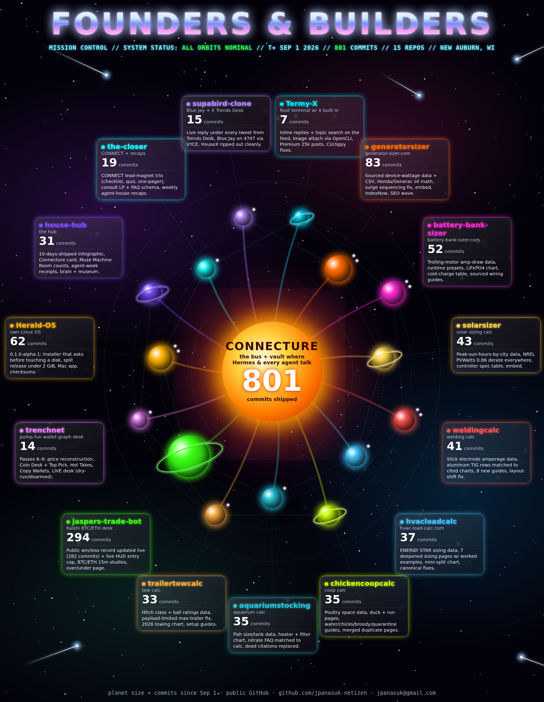

dated evidence preferred · no invented revenue $ · no secrets / .env · categories consistent
2026-07-01 → 2026-11-07 (America/Chicago)2026-11-07 · ISO weeks 44 and 45 added; week 45 in progress through Nov 7
Weeks
Commit counts across the 15 active public repos at github.com/jpanasuk-netizen (default branch, America/Chicago). Prior Oct 13 snapshot, since Sep 1: 801 commits. No newer total is stated here.

ISO week 45 · Nov 2–8, 2026 · in progress through Nov 7
Grok Bot and SEO: published three Pinterest batches, 36 pins, on Nov 2, 4, and 5. The Nov 3 and Nov 7 batches remain drafts. Nov 6 has no published URLs either. Examples: Nov 2 and Nov 5.
SEO: read Search Console across nine sites on Nov 2. For Oct 25–31, impressions were 963 versus 887 in the prior comparison window; clicks fell from seven to two. These are search impressions and clicks, not revenue. The reporting window precedes this digest week.
Calculator pages: checked the Oct 27 batch on Nov 3. Eight pages returned 200 and appeared in their sitemaps: generator, welding, battery, two chicken, two trailer, and aquarium. The solar RV page and two shop-template pages still returned 404. The Nov 3 briefs remain proposals. This check is Nov 3, not Oct 27.
Grok Bot and Grok Build: the Nov 4 Termy X work included the upstream rc.10 merge and Reply Guy panel work. The panel received text-input, fetch-error, and layout fixes. Source: Oct 29–Nov 5 rollup. That page is a rollup, not an independent build test.
Hermes: on Nov 6 the Windows installation was moved and startup was repaired. Leo-Bot reported it running from the relocated installation and said to connect the desktop to that existing local installation. Hermes Bot reported restoring its model endpoint and getting answers through the CLI and gateway during this week.
YouTube: The Machine Room posted 54 uploads on @themachineroomtoday from Nov 2 through Nov 7, all Shorts. That is 54 of 117 uploads from Oct 26 through Nov 7, about 9 a day across those 13 dates. Nov 2 has no publish timestamp in this list. The other days are 18 on Nov 3, 6 on Nov 4, 12 on Nov 5, and 9 each on Nov 6 and Nov 7. Gaps and larger batches are publish timestamps, not a schedule. The Nov 6 clockwork is separate: that run found no pending YouTube uploads or Instagram clips, published nothing itself, and its next batch was still scripts and thumbnails waiting for renders. The run does not mean the channel had no uploads. No dated muse.ai output was found for this week, so these uploads are not credited to muse.ai. Instagram is not in this YouTube list. Times: source notes.
ISO week 44 · Oct 26–Nov 1, 2026
ISO week label, so this card does not continue the Oct 19–23 card. Oct 24–25 sit between them and are not a section here. Source notes: Oct 26–Nov 7 notes
Grok Bot and SEO: published five Pinterest batches, 60 pins, on Oct 26, 28, 29, 30, and Nov 1. Oct 27 and Oct 31 have no published-URL section. Examples: Oct 26 and Nov 1.
SEO: read Search Console across nine sites on Oct 26. For Oct 18–24, impressions were 887 versus 808 in the prior comparison window; clicks were seven versus three. These are search impressions and clicks, not revenue. The reporting window precedes this digest week.
Calculator pages: the Oct 27 status check found the earlier batch live across generator, welding, battery, HVAC, trailer, aquarium, and shop templates. Two chicken pages loaded but were missing from the chicken sitemap. The solar RV page was still missing. New Oct 27 briefs were written; that was planning, not a claim that they shipped that day.
YouTube: The Machine Room posted 63 uploads on @themachineroomtoday from Oct 26 through Nov 1 (60 Shorts and 3 longer videos). That is 63 of 117 uploads from Oct 26 through Nov 7, about 9 a day across those 13 dates. Oct 28 and Oct 31 have no publish timestamp in this list. Other days: 9 on Oct 26, 9 on Oct 27 (7 Shorts and 2 longer videos), 9 on Oct 29, 18 on Oct 30, and 18 on Nov 1 (17 Shorts and 1 longer video). Gaps and larger batches are publish timestamps, not a schedule. Queue checks on Oct 26 and 27 found no pending uploads in those runs, and those runs did not publish or start a scheduler. The channel timestamps still include uploads on both days. No dated muse.ai output was found for this week, so these uploads are not credited to muse.ai. Instagram is not in this YouTube list. Times: source notes.
Termy X (Grok Bot): Linux build (cfg split, rustls, build guide, Linux + Windows CI), mimalloc + zero-copy speed, OpenCLI speed patch, reposts inline, Profile Top 20 + All Tweets 120, Compose drag-copy, Follow/Unfollow, Enter/Ctrl+C fixes. All merged to main at 33dcd5f.
Termy X launch posts live (Grok Bot, browser + OpenCLI on LightBringer): LinkedIn · Show HN · Dev.to · Facebook (text + link). Reddit drafts still unposted.
New niche (Grok Bot): water softener sizer, softenersizer preview on Cloudflare Workers. softenersizer.com is open but not bought.
SEO (SEO seat): GSC digest 808 impressions vs 369 the week before, 3 clicks vs 1. Cross-site link map, IndexNow, solar + welding title/meta fixes. Week-of-Oct-13 pages + sitemaps on all 8 sizer sites.
Q Streaming LLC (Grok Bot): PNC Business Checking approved Oct 15; qstreamingllc.com retro site, deck and LinkedIn company page live Oct 16. SIZE IT RIGHT! KDP: 10 books + 10 EPUBs rebuilt.
Hermes (HermesVault on LightBringer): nightly vault-insight digests Oct 13, 14, 17, 19 (Oct 18 was an auth-failure stub; none Oct 15–16). Machine Room clockwork ran Oct 13–16 + 19, all DRY. Oct 19 X queue #48 / #54 / #18 was queued for Jeremy, not posted.
SEO waves 3–4 on all 8 sizer sites: IndexNow, calculator embeds, sourced charts + diagrams, disclosures first, permalinks, methodology.
Sourced data page + CSV on every sizer site (device watts, trolling-motor amps, peak sun hours, electrode amps, ENERGY STAR, poultry space, fish size, hitch ratings).
Herald-OS 0.1.0-alpha.1: installer, bootc image, Arch packages, Mac app, split release under 2 GiB.
Termy-X: Premium 25k + image attach, CI green, inline reply + topic search on the feed.
Blue Jay: HouseX removed; Trends Desk posts a live reply under a chosen tweet. Hub: 10 days shipped infographic.